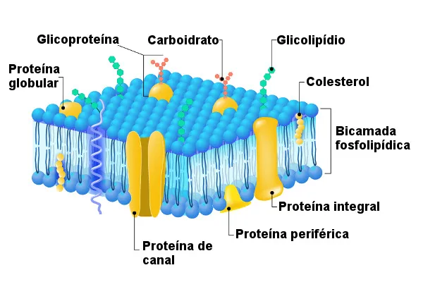

Célula Animal
.webp)
A célula animal é uma célula eucariótica, pois possui uma membrana que envolve o núcleo. A célula animal se diferencia das células procarióticas, como as das bactérias, porque o seu DNA (material genético) se encontra dentro do núcleo. Já as células procarióticas não possuem um núcleo definido. Além de ter um núcleo, as células animais também contêm outras organelas (estruturas), que realizam funções específicas, necessárias para o bom funcionamento da célula.
Membrana Plasmatica
Membrana plasmática é encontrada em todos os tipos celulares e é formada por dupla camada de lipídios, em que está imersa uma série de proteínas.
Características da membrana plasmática
É uma estrutura que delimita as células e apresenta uma espessura compreendida entre 7,5 nm e 10 nm. Amembrana plasmática é formada basicamente por lipídios e proteínas, sendo aqueles mais relacionados com a parte estrutural da membrana e estas relacionadas com as várias funções exercidas por ela. Estima-se que as moléculas lipídicas sejam responsáveis por cerca de 50 % da massa das membranas, sendo o restante basicamente formado por proteínas.
O exemplo que atualmente descreve a estrutura da membrana plasmática é o modelo do mosaico fluído. De acordo com ele, a membrana plasmática é uma estrutura formada por uma bicamada de lipídios com proteínas nela inseridas.
Os lipídios que formam essa bicada são basicamente os fosfolipídios, os quais se destacam por apresentarem uma região hidrofóbica e uma região hidrofílica. Na membrana plasmática, a primeira está voltada para o centro da membrana, enquanto a segunda volta-se para as superfícies externa e interna da membrana.
É importante salientar que os fosfolipídios não são os únicos lipídios presentes nessa estrutura, nela também é possível encontrar glicolipídios e colesterol. Cada metade da bicamada da membrana é diferente, apresentando uma composição lipídica distinta. Dizemos, portanto, que existe uma assimetria entre elas.
Glicocálice
Na região mais externa da membrana plasmática, é possível observar uma área denominadaglicocálice ou glicocálix . Essa área é mal delimitada e formada por cadeias glicídicas dos glicolipídios e glicoproteínas que estão presentes na própria membrana; além disso, também apresenta glicoproteínas e proteoglicanos que são sintetizados pela célula. A glicocálice está relacionada com processos, tais como: proteção contra lesões, reconhecimento de moléculas e adesão celular.
Proteínas de membrana
Como visto, a membrana plasmática apresenta proteínas que estão inseridas na bicamada lipídica. Essas exercem várias funções na célula, como: transporte de substâncias, atividades enzimáticas e comunicação entre células. A quantidade de proteínas e os tipos encontrados na membrana estão relacionados com a atividade exercida por aquela célula.
As proteínas presentes na membrana plasmática podem ser classificadas em dois grupos: proteínas integrais e proteínas periféricas. As proteínas integrais são aquelas que penetram na bicamada fosfolipídica. Denomina-se proteínas transmembranas as proteínas integrais capazes de atravessar completamente a membrana. Essas podem atravessar a membrana uma ou mais vezes.
As proteínas periféricas, por sua vez, são aquelas que não penetram na membrana plasmática, sendo observada apenas uma conexão fraca com a membrana. Devido a isso, as proteínas periféricas podem ser facilmente dissociadas da membrana.
Funções da membrana plasmática
- É responsável por delimitar as células, separando o meio extracelular do meio intracelular.
- É responsável por garantir proteção à estrutura da célula.
- Relaciona-se com a troca de substâncias entre a célula e o meio externo. Ela é capaz de selecionar o que entra e o que sai da célula, deixando apenas algumas substâncias passarem por ela. Devido à capacidade de selecionar o que entra e o que sai, diz-se que a membrana plasmática apresenta permeabilidade seletiva.
- É responsável por captar sinais externos.
- Nas células vegetais, coordena a síntese e o agrupamento das microfibrilas que formam a parede celular, localizada externamente à membrana.
Citoplasma
Citoplasma é o nome dado à região interna da célula, sendo, na célula eucarionte, localizada entre a membrana plasmática e a membrana do núcleo. Como a célula procarionte não possui núcleo definido, podemos dizer que o citoplasma é sua região interna. O citoplasma é uma região celular importante, sendo observada a ocorrência de diversas reações químicas nela.
Não podemos esquecer-nos ainda de que é no citoplasma que encontramos, em células eucariontes, as chamadas organelas celulares, tais como a mitocôndria e o complexo golgiense. A região localizada entre as organelas é chamada de matriz citoplasmática ou citosol e apresenta consistência gelatinosa.
Funções do citoplasma
O citoplasma está relacionado com diferentes processos, uma vez que nele estão as organelas celulares. Nele muitas reações químicas ocorrem, sendo o local, por exemplo, onde as proteínas são sintetizadas. Vale salientar que, devido à presença do citoesqueleto, o citoplasma está relacionado também com a sustentação mecânica da célula e até mesmo a movimentação de alguns tipos celulares.
Citoesqueleto
Citoesqueleto é uma rede de filamentos de proteínas que cruzam o citosol de células eucariontes e ajudam a célula, dentre outras funções, a organizar suas atividades internas e realizar determinados movimentos.
Existem três tipos de filamentos que fazem parte dessa rede: filamentos de actina, microtúbulos e filamentos intermediários. É importante salientar que algumas células procarióticas apresentam alguns componentes do citoesqueleto, entretanto, essa estrutura é evidente em células eucarióticas.
Filamentos de actina ou microfilamentos
São os filamentos mais finos e estão presentes em todas as células eucarióticas. São formados por subunidades de actina e apresentam diâmetro de 7nm. Esse tipo de filamento é mais numeroso em células musculares, onde atuam no processo de contração muscular.
Microtúbulos
Destacam-se por serem os filamentos mais grossos e apresentarem-se como tubos ocos. Os microtúbulos são formados por subunidades de tubulina e o seu diâmetro é de 25 nm com lúmen de 15 nm. Os microtúbulos estão relacionados com uma função fundamental: a divisão celular.
É graças aos microtúbulos que os cromossomos são distribuídos para as células-filhas. Também são componentes essenciais de duas estruturas importantes de algumas células eucariontes, os flagelos e cílios, estruturas relacionadas à movimentação. Nas células animais, o centrossomo caracteriza-se como o principal centro organizador de microtúbulos.
Filamentos intermediários
Apresentam, como o próprio nome sugere, uma espessura intermediária entre os filamentos de actina e os microtúbulos. O diâmetro dos filamentos intermediários é de 8–12 nm. Esses filamentos são formados por uma família de proteínas fibrosas.
Eles atuam, principalmente, garantindo que a célula resista ao estresse mecânico gerado quando ela é distendida. Além disso, filamentos intermediários atuam na ancoragem do núcleo e de certas organelas e na formação da lâmina nuclear.
Organelas Celulares
Organelas celulares são estruturas envolvidas por membranas, localizadas no citoplasma de células eucarióticas e que desempenham importantes funções relacionadas com a sobrevivência da célula. São exemplos: núcleo, mitocôndria, retículo endoplasmático, complexo golgiense, lisossomo, peroxissomo, cloroplasto e vacúolo.
Núcleo
O núcleo é a organela mais proeminente em uma célula eucariótica. Ele é envolvido por duas membranas, denominadas envelope nuclear. O envelope nuclear separa o conteúdo do citoplasma do interior dessa organela. No interior dele, observa-se cromossomos e nucléolo. É no nucléolo que as subunidades ribossomais são formadas.
O núcleo apresenta duas funções principais: controle das atividades que ocorrem na célula e armazenamento da informação genética. Vale salientar, no entanto, que material genético é observado também no interior de mitocôndrias e plastídios.
Mitocôndria
Mitocôndrias são organelas com formato esférico ou alongado e que apresentam duas membranas, as quais não se tocam. O espaço entre elas é chamado de espaço intermembrana ou intermembranoso. O espaço interno da organela, por sua vez, o qual é delimitado pela membrana interna, recebe o nome de matriz mitocondrial. A membrana interna das mitocôndrias projeta-se para o interior da organela, formando as cristas mitocondriais.
.webp)
Uma característica peculiar dessa organela é que ela possui seu próprio DNA e ribossomos. O DNA mitocondrial tem forma circular, assim como o DNA bacteriano. Os ribossomos da mitocôndria também são semelhantes aos das bactérias, sendo menores que aqueles presentes no citoplasma da célula.
As mitocôndrias se relacionam com a produção de energia pela célula, sendo onde ocorre o processo de respiração celular. A quantidade de mitocôndrias em uma célula está relacionada com o metabolismo energético dessa célula, sendo observada maior quantidade delas em células que consomem muita energia, como as musculares.
Lisossomos
Os lisossomos são organelas de formato irregular, sendo, geralmente, esféricos e com diâmetro de 0,05 μm a 0,5 μm, que atuam no processo da digestão intracelular. Em seu interior está presente uma série de enzimas, que variam de uma célula para a outra e ajudam na digestão.
Retículo endoplasmático
O retículo endoplasmático é uma rede de espaços interconectados envolvida por uma membrana. Nele são sintetizados componentes da membrana celular e materiais destinados à exportação.
Pode ser classificado em dois tipos: rugoso e liso. O retículo endoplasmático rugoso caracteriza-se por ter ribossomos ligados à sua superfície. Esses ribossomos atuam sintetizando proteínas que são liberadas no interior ou na membrana do retículo endoplasmático rugoso.
O retículo endoplasmático liso, diferentemente do rugoso, não apresenta ribossomos aderidos à sua membrana. Ele está relacionado com diversos processos, a depender do tipo celular, por exemplo, com a síntese de lipídios, o metabolismo de carboidratos e processos de desintoxicação.
Complexo golgiense
O complexo golgiense é uma organela formada por várias vesículas achatadas e distribuídas umas sobre as outras (empilhadas). Como função dele, podemos citar modificações pós-tradução, e empacotamento e endereçamento de moléculas.
Peroxissomo
O peroxissomo, organela esférica delimitada por membrana simples, é responsável por oxidar substratos orgânicos. Nessa reação, ele produz peróxido de hidrogênio, quebrado no interior dessa organela pela catalase.